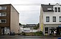

infill

Has synonym(s): infilling
Definition: In urban planning, infill, or in-fill, is the rededication of land in an urban environment, usually open-space, to new construction. Infill also applies, within an urban polity, to construction on any undeveloped land that is not on the urban margin. The slightly broader term "land recycling" is sometimes used instead. Infill has been promoted as an economical use of existing infrastructure and a remedy for urban sprawl. Detractors view increased urban density as overloading urban services, including increased traffic congestion and pollution, and decreasing urban green-space. Many also dislike it for social and historical reasons, partly due to its unproven effects and its similarity with gentrification.
Source: Wikipedia
Wikipedia Page (Something wrong with this association? Let us know.)
Wikidata Page (Something wrong with this association? Let us know.)